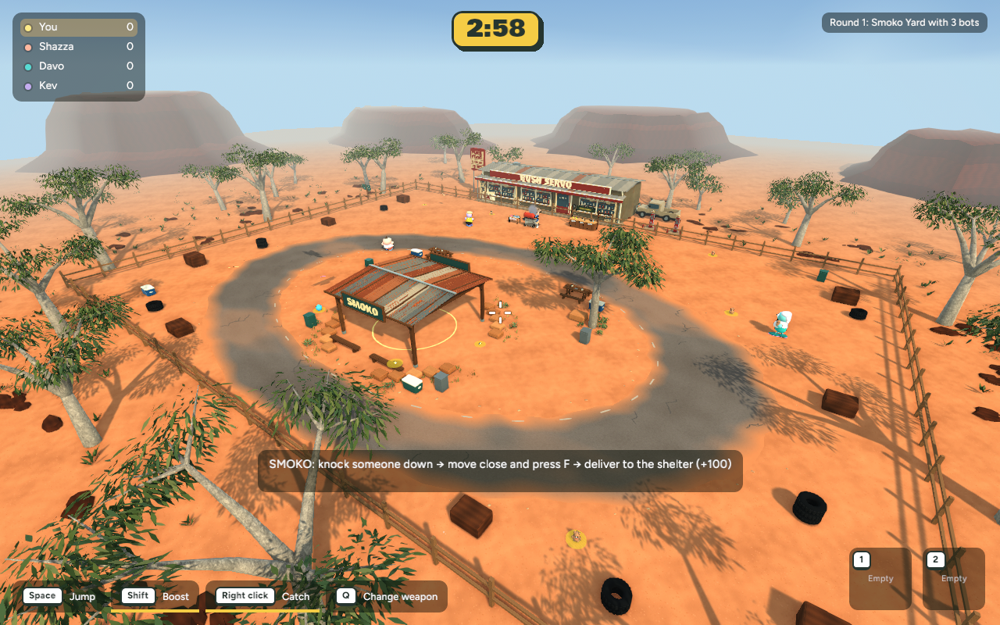
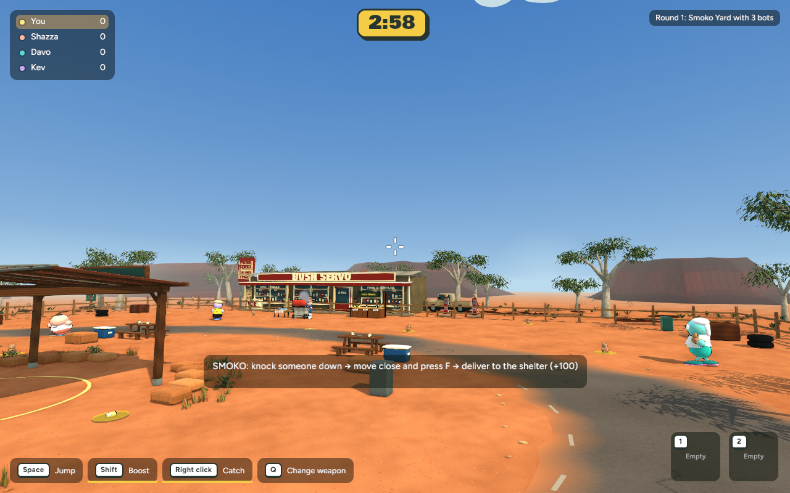
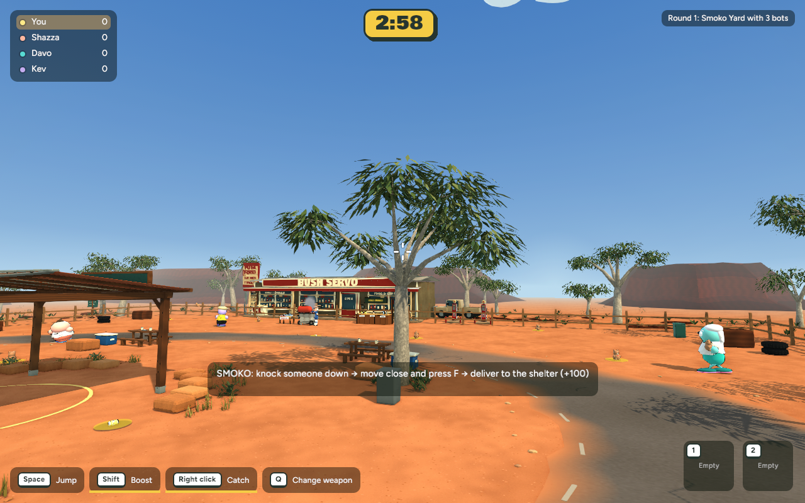
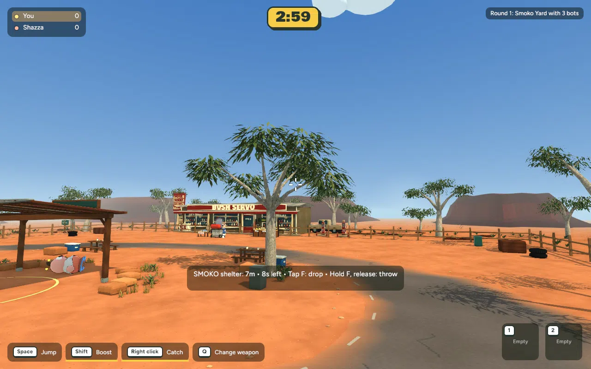

Before

After

Actual game captures — 30 October 2026. Exterior scenery and mesas unchanged. Local review; not published.
Asymmetric pale branches, a fuller hanging canopy, a small planted base and solid lower trunk. Existing Poly Haven bark reused in Blender. The road and delivery lanes stay clear.




+5,364 triangles, +301,800 bytes. Existing 11 landscape material batches and texture memory unchanged. Native matched samples show essentially unchanged frame times. Browser/device performance is not measured.
The lower trunk is solid; high branches are visual. New multiplayer protocol requires all peers to update together when published. This first tree awaits review before adding others.
Verification and recovery